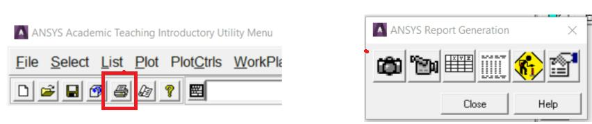
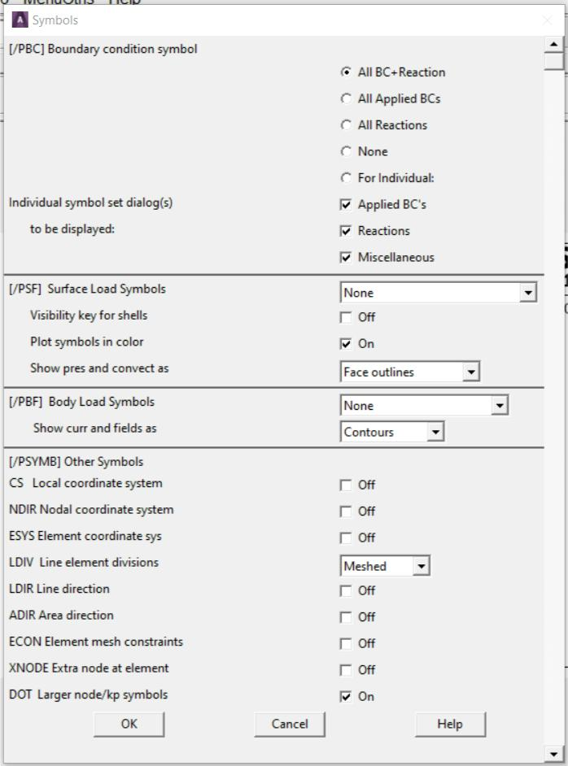

2.12 Documenting the Analysis
ANSYS has a Report Generator (Fig. 2.22) available from the main toolbar, which can help to put together an HTML report by capturing images, window listings, etc.

Fig. 2.22 Report Generator
To print a hardcopy of the graphics window: Utility Menu > PlotCtrls > Hard Copy > To Printer. There are several ways of capturing a graphic image for use in Microsoft Word, Powerpoint or some other software.
Exact screen shot of the graphics window: Utility Menu > PlotCtrls > Capture Image will pop up another window with a screen shot of the graphics window. It can be kept available for later reference or save the image to a bitmap (.bmp) file. Note that although a windows bitmap file is not compressed, when it is inserted into Word it does get compressed automatically so analyst doesn’t end up with a huge bloated document.
Output a vector image: Utility Menu > PlotCtrls > Redirect Plots > To PSCR File…. A Postscript file is a vector file, which means that it is a 2D representation of all of the entities in the graphics window in an editable format. Because it is not a bitmap, it can be scaled to any size without losing any resolution, and is always very crisp looking. It can also be imported into a technical illustration program and manipulated very easily: change the colors, add annotations, change or resize fonts, etc. All this can be done in ANSYS but it can be quicker in an illustration package. One caution about Postscript files! Since they actually write out every entity in the model, if the model is large (say a tet mesh of a CAD model) this file can be huge. It is best suited for getting very crisp images of smallish models or wireframe displays. Microsoft Word will not display the image until it is printed.
Output a bitmap image: Utility Menu > PlotCtrls > Redirect Plots > To xyz File…, where xyz is JPEG, TIFF, PNG, etc. These file formats produce good images with reasonably small file sizes. The size of the image file for these formats is not dependant on the size of the model like Postscript.
Controlling the Way the Model Looks
All of the visual aspects of what is seen in the graphics window are controlled from the ‘Plot’ and ‘PlotCtrls’ pull downs from the Utility menu. Use Utility Menu > Plot to plot different types of entities to the screen. Use Utility Menu > PlotCtrls to control the characteristics of what is to be plotted.
Utility Menu > PlotCtrls > Numbering: Entity Numbers on and off.
Utility Menu > PlotCtrls > Symbols: Turn various markers and symbols on and off (Fig. 2.23).

Fig. 2.23
Utility Menu > PlotCtrls > Style: Change hidden line, element edges, element shrink, etc.
Utility Menu > PlotCtrls > Device Options: Change between solid shaded and wireframe display.